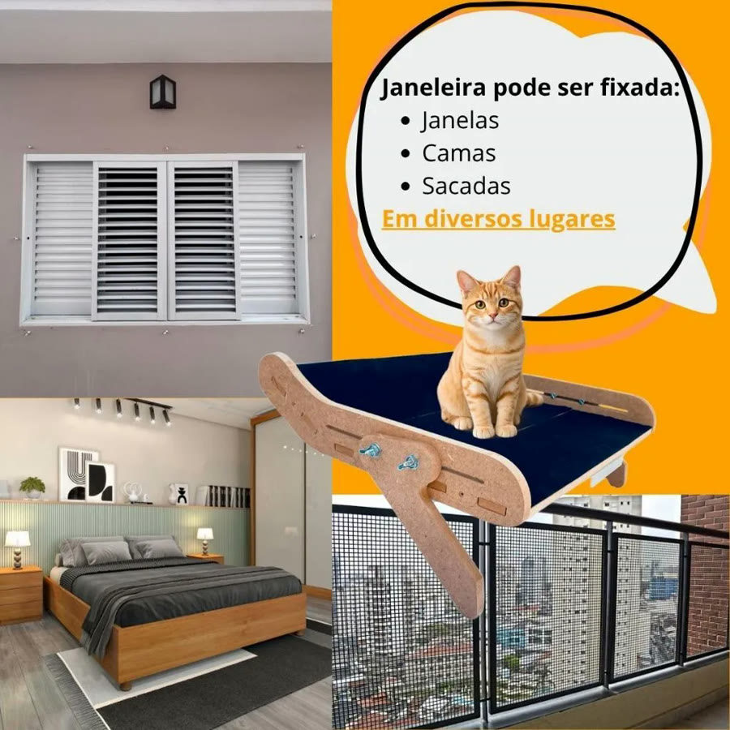
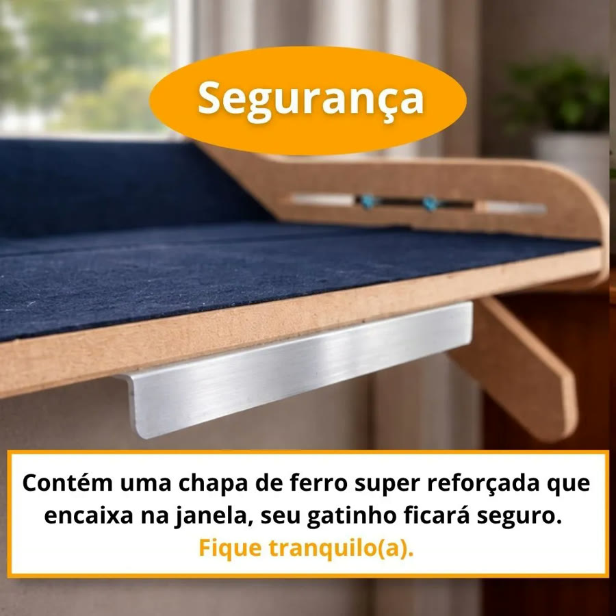
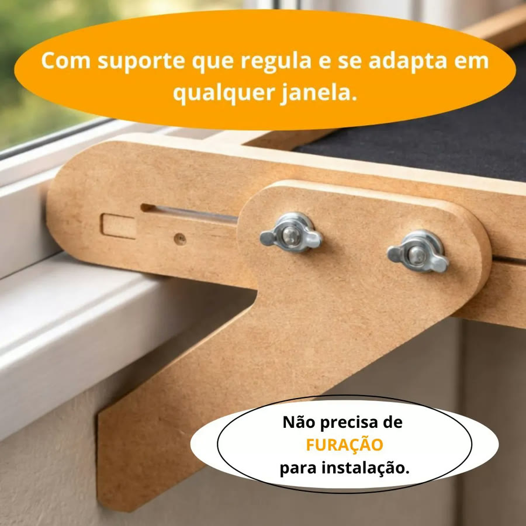
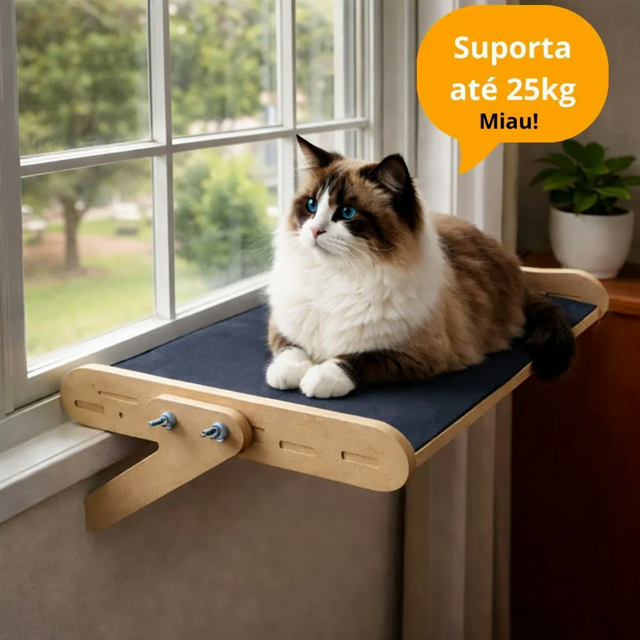
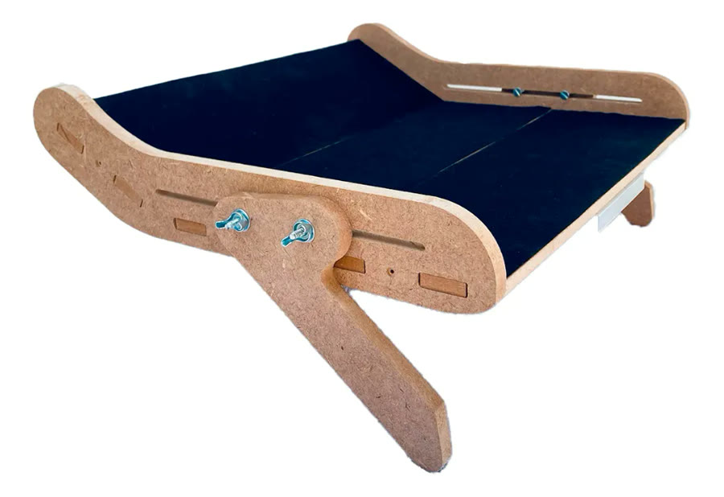

Achado nº 27
Cama janeleira para gatos (suporta até 25 kg)






O que diz a página oficial do produto
- Caminha para gato que se prende no parapeito da janela; estrutura de MDF com revestimento de carpete
- Não precisa furar para instalar: tem uma chapa de ferro que encaixa na janela e um suporte que regula com parafusos borboleta
- Segundo o anúncio, pode ser presa em janelas, camas e sacadas
- Suporta até 25 kg
- Mede 37 cm por 31 cm e 9 cm de altura; pesa 2 kg
- Vem desmontada, com manual de instruções
- No Mercado Livre, tem nota 4,7 com mais de 180 avaliações e mais de mil vendidos
Link de afiliado: se você comprar por ele, a Achadaria pode receber uma comissão, sem custo extra para você. Preço, estoque e entrega são da loja e podem mudar; confira lá antes de comprar.